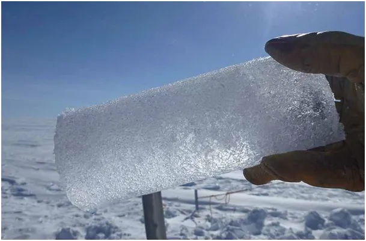
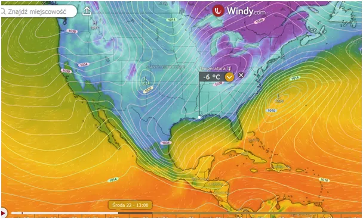
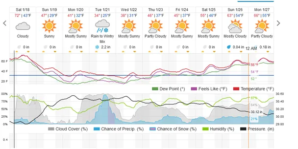
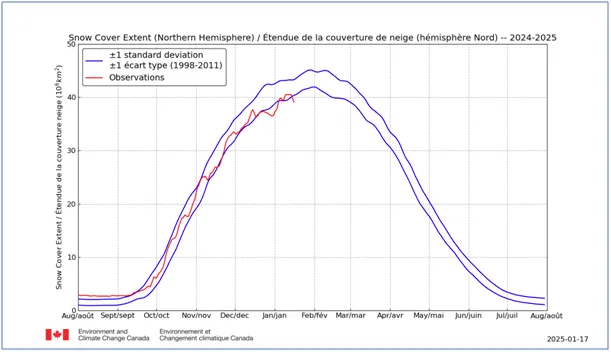
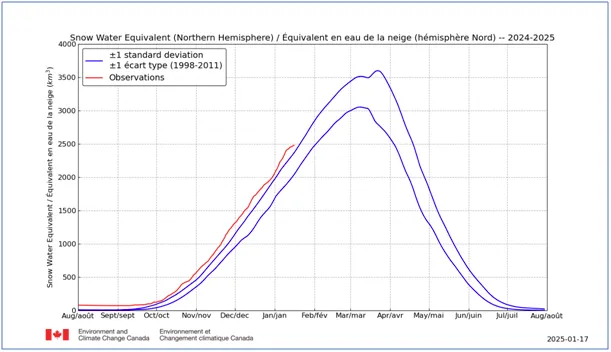

Czy roczny bilans śniegu może być nie zerowy?
Surowa prognoza sprzed kilku dni dla USA jest coraz bardziej prawdopodobna. Obecnie nad Zatoką Meksykańską panuje wiosenna pogoda, ale już w niedzielę w nocy fala mrozów i śnieżyc przesunie się mocno na południe. Przyglądajmy się temu zjawisku, które zapewne będzie w mediach przejawem globalnego ocieplenia.

Od kilku lat monitoruję czapę śniegową na półkuli północnej i wiemy, że nowe pokłady wody uwięzionej w śniegu nie topnieją latem całkowicie tylko są w Arktyce już od września przykrywane świeżymi opadami. Akumulacja lodu arktycznego jest sprzeczna z oficjalną propagandą i dlatego te dane są gumkowane co roku, co opisałem tu: https://pawelklimczewski.pl/2024/08/15/cud-znikajacego-sniegu/

W tym sezonie zasięg pokrywy śnieżnej jest w strefie minimów z lat poprzednich, ale ilość tego śniegu przekracza normy wieloletnie. Prostym następstwem tej proporcji jest wyjątkowo gruba czapa w regionach górskich i północnych. Oznacza to, że stopienie tego śniegu latem będzie trudne lub niemożliwe.

Wykres zasięgu pokrywy śniegowej osiąga swoje maksimum na początku lutego, dokładnie w chwili, gdy w naszej strefie klimatycznej zacznie się przedwiośnie.

Tymczasem ilość arktycznego śniegu rośnie do końca marca. Okres topnienia na północy jest znacznie krótszy niż okres kumulacji, zatem przy podobnym tempie obu procesów bilans nie może być zerowy, a będzie dodatni. Wiadomo, że dzieje się tak na Ziemi od 11 000 lat, od zakończenia epoki lodowej. Z tego lodu odłożonego na setki metrów na Grenlandii naukowcy wycinają lodowe rdzenie na podstawie których piszą prace o topniejących lodach Arktyki.
Paweł Klimczewski